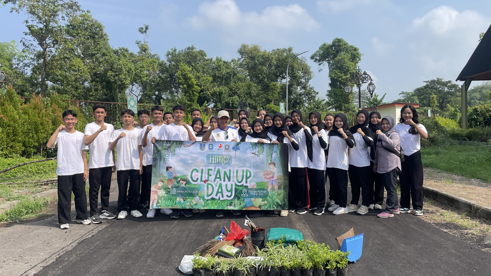

Rapat Koordinasi
HIMO Mojokerto Raya menjalankan program kerja Rapat Koordinasi pertama dalam masa kepengurusan 2026/2027. Kegiatan ini bertujuan menyelaraskan ide dan pemikiran antar-OSIS.
Baca selengkapnyaBersama membangun sinergi, memperkuat kolaborasi, dan menciptakan generasi pemimpin muda yang progresif untuk Mojokerto Raya.
HIMO Mojokerto Raya merupakan wadah kolaborasi, komunikasi, dan pengembangan organisasi siswa intra sekolah di wilayah Kabupaten dan Kota Mojokerto.
HIMO hadir sebagai ruang untuk membangun sinergi antarpelajar, meningkatkan kualitas kepemimpinan, serta menciptakan generasi muda yang aktif, kreatif, aspiratif, dan inspiratif.
Pelajari SelengkapnyaForum komunikasi dan koordinasi antar-OSIS dari seluruh SMA di Mojokerto Raya.
Program pembinaan untuk meningkatkan kapasitas dan kualitas kepemimpinan pelajar.
Kegiatan bakti sosial dan aksi lingkungan sebagai wujud pelajar yang peduli.
Menyampaikan aspirasi pelajar kepada pemangku kebijakan secara terstruktur.
Anggota Aktif
Departemen
Program Tahunan
Periode Aktif
Program dan kegiatan yang telah dijalankan HIMO Mojokerto Raya.
HIMO Mojokerto Raya menjalankan program kerja Rapat Koordinasi pertama dalam masa kepengurusan 2026/2027. Kegiatan ini bertujuan menyelaraskan ide dan pemikiran antar-OSIS.
Baca selengkapnya
Program HIMO Bersinar berbasis bakti sosial untuk mewujudkan generasi muda yang peduli dengan masyarakat sekitar Mojokerto Raya.
Baca selengkapnya
Kegiatan kerja bakti dan aksi lingkungan sebagai wujud pelajar yang peduli terhadap kebersihan dan kelestarian lingkungan di Mojokerto Raya.
Baca selengkapnyaHIMO Mojokerto Raya dipimpin oleh delegasi Kabupaten dan Kota Mojokerto, dengan tujuh departemen yang berjalan secara sinergis.
Lihat Struktur LengkapKunjungi atau hubungi sekretariat HIMO Mojokerto Raya untuk informasi lebih lanjut mengenai kegiatan dan keanggotaan.
Alamat
Jl. Hayam Wuruk No.66, Mergelo, Magersari,
Kec. Magersari, Kota Mojokerto,
Jawa Timur 61318